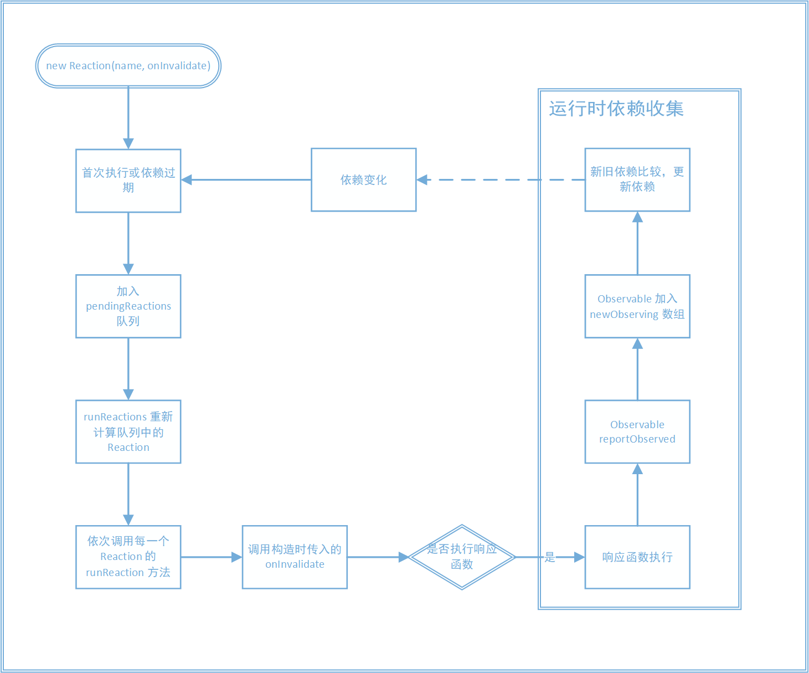

Reaction 是一类的特殊的 Derivation，可以注册响应函数，使之在条件满足时自动执行。常用于触发副作用，比如打印日志、更新 DOM 或者发送网络请求。
Reaction 的生命周期可以用下图表示：

- Reaction 在创建之后初次执行或依赖过期时，会加入到全局的 pendingReactions 队列中
- pendingReactions 中的 Reaction 重新执行
- onInvalidate 调用，执行响应函数。
- 响应函数执行，同时收集依赖，即「运行时依赖收集」
使用 autorun, when 等 api，创建 Reaction 后，会立即执行该 Reaction 的 schedule 方法。第二篇中提到，Observable 在 reportChanged 时，也会调用这个方法将 Reaction 加入到全局的待执行队列中：
1 | schedule() { |
与之前不同，这时的 runReactions 会立即执行 pendingReactions 中的所有 Reaction：
1 | function runReactions() { |
Reaction 初次执行时会第一次收集依赖，此后当依赖发生变化时，它被加入 pendingReactions 中，并在下一次事务结束时重新执行，更新依赖。接下来看看 Reaction 执行过程中是如何完成依赖的收集和更新的：
Reaction 执行过程
runReactionsHelper 依次执行 pendingReactions 中所有的 Reaction：
1 | // 设定 Reaction 计算的最大迭代次数，避免 Reaction 重新触发自身造成死循环 |
pendingReactions 中的 Reaction 依次调用 runReaction 方法：
1 | runReaction() { |
注意这里调用了 onInvalidate，该函数可以在响应函数执行之前做一些判断，控制响应函数执行的「时机」。
Mobx 提供了 autorun, when, autorunAsync 等 api 用于创建 Reaction，它们的区别就在于构造 Reaction 时传入的 onInvalidate 函数不同：
不同类型的 Reaction
autorun
autorun 的 onInvalidate 会直接执行 Reaction 的 track 方法，也就是说，只要 Reaction 执行，就会执行响应函数：
1 | function autorun(arg1: any, arg2: any, arg3?: any) { |
autorunAsync
autorunAsync(action: () => void, minimumDelay?: number, scope?)
节流版 autorun，在 minimumDelay 时间内只会执行一次响应函数。通过在 onInvalidate 内做节流处理来实现：
1 | function autorunAsync(arg1: any, arg2: any, arg3?: any, arg4?: any) { |
when
when(debugName?, predicate: () => boolean, effect: () => void, scope?)
when 在 predicate 函数返回 true 时执行，通过在 onInvalidate 进行这个判断来实现。另外，它只执行一次就销毁，所以它的 onInvalidate 不调用 track 去收集依赖，直接执行响应函数：
1 | function when(arg1: any, arg2: any, arg3?: any, arg4?: any) { |
运行时依赖收集
Reaction 的 track 方法会执行响应函数并进行依赖收集，也就是「运行时依赖收集」的过程。
track 方法本身只是做了开始一个新事务，一些标志属性的修改和通知 spy 等工作。
运行时依赖收集的核心步骤在 trackDerivedFunction 函数中：
1 | // 执行响应函数，同时收集依赖 |
注意响应函数调用时不仅仅是执行了该函数，还触发了所有被观察的 Observable 的 reportObserved 方法，从而更新了当前 Derivation 的 newObserving 数组。这部分内容可以回顾第二篇。
再来看看 bindDependencies 方法如何更新依赖：
1 | function bindDependencies(derivation: IDerivation) { |
朴素算法比较新旧 observing 数组的时间复杂度为 O(n^2)，这里借助 diffValue 属性的辅助将复杂度降到了 O(n)。
这样 Reaction 的执行完成，其依赖也得到了更新。当依赖发生变化后，Reaction 会被加入 pendingReactions 中，并重复上述过程。